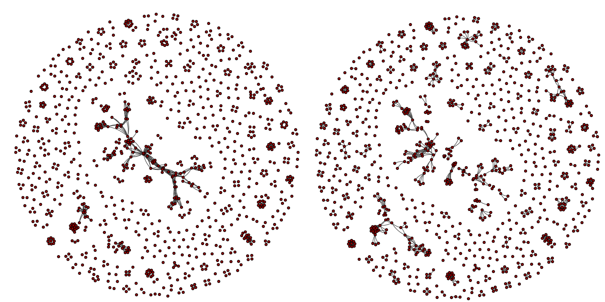

Design and analysis of socio-technical systems
The pervasive use of information and communication technologies across all fields of society results in an increasing interdependency between social and technical systems. Modern society depends on a multitude of technical systems and infrastructures, moreover many of those technical systems are influenced by the social systems into which they are embedded. Obvious examples for such systems include communication systems, collaboration tools, crowdsourcing platforms, social media or collaborative information systems, while less obvious examples include software engineering projects, search engines, traffic and power infrastructures or companies. Acknowledging the fact that the social and the technical layers of such systems are coupled inseparably, they are commonly referred to as socio-technical systems. The fact that their study necessitates models for both the social and the technical dimension has recently been acknowledged by a number of research communities and related research questions are addressed under the umbrella of socio-technical, techno-social or cyber-physical systems, community informatics, social informatics, human-computer interaction and social computing.
Importantly, the ongoing convergence between social and technical systems implies that there is an increasing amount of data that can be used to quantitatively study socio-technical systems. Our focus is thus on data-driven research which allows us to analyse socio-technical systems in different contexts, typically addressing the question how they can be designed and managed better.
Studying the interplay between social structures and information networks found in scholarly publications, one important question that we study is how social structures influence our perception of what is important and how do they influence what we perceive and what we ignore. In this line of research we have shown that scholarly citation structures are indeed highly correlated with the social network between authors. This correlation can be used to predict - solely based on the collaboration network of authors - whether their publications will be among the most highly cited in their respective field. This work not only provides interesting insights into citation patterns, it also suggests novel directions for the development of importance measures and ranking schemes which take into account the social dimension of information systems.
Figure: Citation (left) and collaboration (right) structures of a scientific community. Each node represents one author in the author-author citation network (left) and the coauthorship network (right)
Interestingly for many of today's socio-technical systems, the proper "design" and "functioning" of the social component is as important as that of the technical component. In another line of research we thus study questions such as how technical systems can help us to monitor or even optimise the evolving social structures of teams or companies. We typically address this problem from the perspective of complex networks, which allows us to employ our competence in the modeling of evolving networks, the network-based analysis of collaboration structures, or the analysis of time-varying networks. Similarly, we are finally interested in novel approaches which facilitate the design of socially-aware technical systems, i.e. technical systems that actively utilise the structure and dynamics of the social systems that they are coupled with in order to achieve their goals. Particular examples include trust-based systems which can be used in the context of Peer-to-Peer or social recommender systems.
Again, a particular asset of our research on the design and analysis of socio-technical systems is that it is truly interdisciplinary, combining the perspectives of social sciences, computer science and complex systems. The success of this approach is documented by the fact that our publications have been published in interdisciplinary journals like EPJ Data Science, in top-tier computer science venues like the International Conference on Software Engineering or IEEE TrustCom, as well as in publications which specifically address the interplay between social sciences and computer science.
Selected Publications
Quantifying and suppressing ranking bias in a large citation network
|
[2017]
|
|
Vaccario, Giacomo;
Medo, Matus;
Wider, Nicolas;
Mariani, Manuel S.
|
Journal of Informetrics,
pages: 766-782,
volume: 11,
number: 3
|
more» «less
|
Abstract
It is widely recognized that citation counts for papers from different fields cannot be directly compared because different scientific fields adopt different citation practices. Citation counts are also strongly biased by paper age since older papers had more time to attract citations. Various procedures aim at suppressing these biases and give rise to new normalized indicators, such as the relative citation count. We use a large citation dataset from Microsoft Academic Graph and a new statistical framework based on the Mahalanobis distance to show that the rankings by well known indicators, including the relative citation count and Google's PageRank score, are significantly biased by paper field and age. Our statistical framework to assess ranking bias allows us to exactly quantify the contributions of each individual field to the overall bias of a given ranking. We propose a general normalization procedure motivated by the z-score which produces much less biased rankings when applied to citation count and PageRank score.
The Social Dimension of Information Ranking: A Discussion of Research Challenges and Approaches
|
[2014]
|
|
Schweitzer, Frank;
Scholtes, Ingo;
Pfitzner, Rene
|
Socioinformatics - The Social Impact of Interactions between Humans and IT
|
more» «less
|
Abstract
The extraction of relevant knowledge from the increasingly large amount
of information available in information repositories is one of the big challenges of our
time. Although it is clear that the social and the information layer of collaborative
knowledge spaces like the World Wide Web (WWW), scholarly publication databases
or Online Social Networks (OSNs) are inherently coupled and thus inseparable, the
question how the ranking and retrieval of information is influenced by the structure
and dynamics of the social systems that create it has been addressed at most partially.
In this talk, we will highlight associated research questions and challenges from an
ethical, social and computer science perspective and introduce a multiplex network
perspective that integrates both the social and the semantic layer of social information
systems.
Predicting Scientific Success Based on Coauthorship Networks
|
[2014]
|
|
Sarigol, Emre;
Pfitzner, Rene;
Scholtes, Ingo;
Garas, Antonios;
Schweitzer, Frank
|
EPJ Data Science,
pages: 9,
volume: 3
|
more» «less
|
Abstract
We address the question to what extent the success of scientific articles is due to social influence. Analyzing a data set of over 100000 publications from the field of Computer Science, we study how centrality in the coauthorship network differs between authors who have highly cited papers and those who do not. We further show that a machine learning classifier, based only on coauthorship network centrality measures at time of publication, is able to predict with high precision whether an article will be highly cited five years after publication. By this we provide quantitative insight into the social dimension of scientific publishing - challenging the perception of citations as an objective, socially unbiased measure of scientific success.
Social resilience in online communities: The autopsy of Friendster
|
[2013]
|
|
Garcia, David;
Mavrodiev, Pavlin;
Schweitzer, Frank
|
Proceedings of the 1st ACM Conference in Online Social Networks (COSN'13)
|
more» «less
|
Abstract
We empirically analyze five online communities: Friendster, Livejournal, Facebook, Orkut, Myspace, to identify causes for the decline of social networks. We define social resilience as the ability of a community to withstand changes. We do not argue about the cause of such changes, but concentrate on their impact. Changes may cause users to leave, which may trigger further leaves of others who lost connection to their friends. This may lead to cascades of users leaving. A social network is said to be resilient if the size of such cascades can be limited. To quantify resilience, we use the k-core analysis, to identify subsets of the network in which all users have at least k friends. These connections generate benefits (b) for each user, which have to outweigh the costs (c) of being a member of the network. If this difference is not positive, users leave. After all cascades, the remaining network is the k-core of the original network determined by the cost-to-benefit c/b ratio. By analysing the cumulative distribution of k-cores we are able to calculate the number of users remaining in each community. This allows us to infer the impact of the c/b ratio on the resilience of these online communities. We find that the different online communities have different k-core distributions. Consequently, similar changes in the c/b ratio have a different impact on the amount of active users. As a case study, we focus on the evolution of Friendster. We identify time periods when new users entering the network observed an insufficient c/b ratio. This measure can be seen as a precursor of the later collapse of the community. Our analysis can be applied to estimate the impact of changes in the user interface, which may temporarily increase the c/b ratio, thus posing a threat for the community to shrink, or even to collapse.
Resilience in Enterprise Social Networks
|
[2013]
|
|
Burger, Valentin;
Hofeld, Tobias;
Garcia, David;
Seufert, Michael;
Scholtes, Ingo;
Hock, David
|
In Proceedings of Informatik 2013, 43. Jahrestagung der Gesellschaft für Informatik e.V. (GI), Informatik angepasst an Mensch, Organisation und Umwelt, 16.-20. September 2013, Koblenz
|
more» «less
|
Abstract
The goal of human resource management is to ensure an effective company environment. Crucial for a good corporate culture is a comfortable atmosphere and positive social relationships between the employees. The interactions of the people and groups working in the company define their relationships and are reflected in the company's social network. Projections of such networks are Enterprise Social Networks which are more and more integrated in companies. These social networks can be a powerful tool to analyse the structure of a company and indicate potential problems. This extended abstract poses research questions to identify and quantify mechanisms that have an impact on the social network of a company to ensure resilience. To address these questions we make assumptions based on real-world observations for a subsequent model.
The co-evolution of socio-technical structures in sustainable software development: Lessons from the open source software communities
|
[2012]
|
|
Zanetti, Marcelo Serrano
|
ICSE '12 Proceedings of the 34th International Conference on Software Engineering
|
more» «less
|
Abstract
Software development depends on many factors, including technical, human and social aspects. Due to the complexity of this dependence, a unifying framework must be defined and for this purpose we adopt the complex networks methodology. We use a data-driven approach based on a large collection of open source software projects extracted from online project development platforms. The preliminary results presented in this article reveal that the network perspective yields key insights into the sustainability of software development.
A tunable mechanism for identifying trusted nodes in large scale distributed networks
|
[2012]
|
|
Chandra, Joydeep;
Scholtes, Ingo;
Ganguly, Niloy;
Schweitzer, Frank
|
Proceedings of 11th IEEE International Conference on Trust, Security and Privacy in Computing and Communications (TrustCom 2012)
|
more» «less
|
Abstract
In this paper, we propose a simple randomized
protocol for identifying trusted nodes based on personalized
trust in large scale distributed networks. The problem of
identifying trusted nodes, based on personalized trust, in a
large network setting stems from the huge computation and
message overhead involved in exhaustively calculating and
propagating the trust estimates by the remote nodes. However,
in any practical scenario, nodes generally communicate with
a small subset of nodes and thus exhaustively estimating the
trust of all the nodes can lead to huge resource consumption.
In contrast, our mechanism can be tuned to locate a desired
subset of trusted nodes, based on the allowable overhead, with
respect to a particular user. The mechanism is based on a
simple exchange of random walk messages and nodes counting
the number of times they are being hit by random walkers
of nodes in their neighborhood. Simulation results to analyze
the effectiveness of the algorithm show that using the proposed
algorithm, nodes identify the top trusted nodes in the network
with a very high probability by exploring only around 45% of
the total nodes, and in turn generates nearly 90% less overhead
as compared to an exhaustive trust estimation mechanism,
named TrustWebRank. Finally, we provide a measure of the
global trustworthiness of a node; simulation results indicate
that the measures generated using our mechanism differ by
only around 0.6% as compared to TrustWebRank.
Coping with information overload through trust-based networks
|
[2008]
|
|
Walter, Frank Edward;
Battiston, Stefano;
Schweitzer, Frank
|
Managing Complexity: Insights, concepts, Applications
|
more» «less
|
Abstract
Over the recent decade, the Internet has conquered people’s homes and life: they pursue an increasing amount of activities on the World Wide Web and this has fundamentally impacted the lifestyle of society. For example, people use their computers for communication with others, to buy and sell products on-line, to search for information, and to carry out many more tasks. Along this development, so far unknown ways of marketing, trading and information sharing are booming. This situation is made possible by a set of related emerging technologies centred around the Internet – just to mention a few: collaborative work and information sharing environments, peer-to-peer networks, and rating, recommendation, and reputation systems. At the economic level, the impact of these technologies is already very high and it is expected to grow even more in the future. The Internet has become a social network, “linking people, organisations, and knowledge” [2] and it has taken the role of a platform on which people pursue an increasing amount of tasks that they have usually only done in the real-world. An approach looking at these emerging technologies and their effects from a complex systems perspective can, as wewill show in this chapter, be very useful.
|